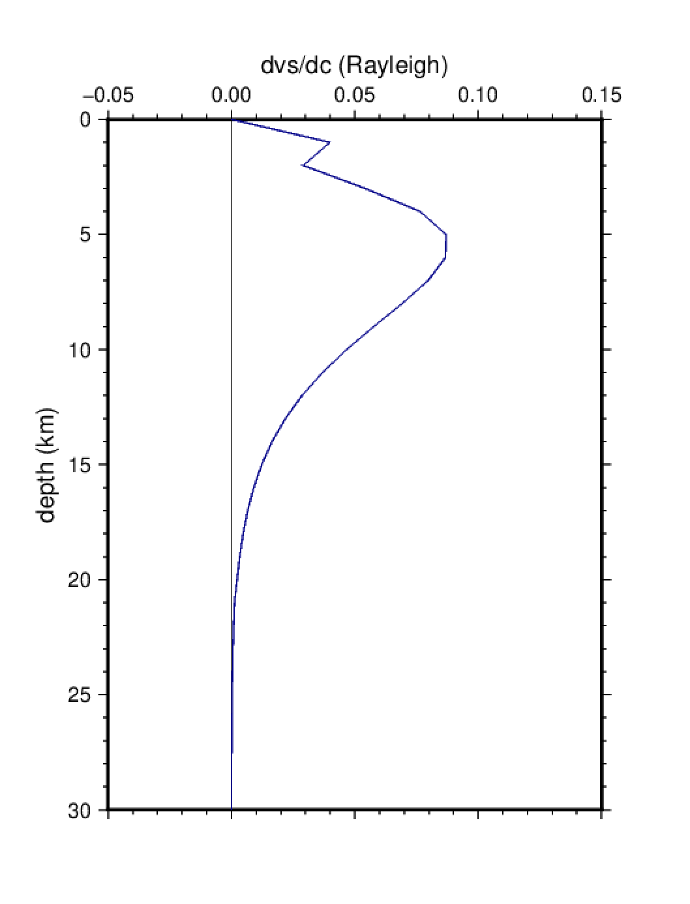

5. Kernels de sensitividad
En este ejercicio calcularemos kernels de sensitividad de las ondas superficiales (LC, LU, RC, RU) para distintos modelos y periodos.
En primer lugar ir al directorio de trabajo:
$ cd
$ cd exercises/kernels
En este directorio se encuentran dos archivos: mod2kernels.sh es el
script de bash que genera y dibuja los kernels de sensitividad,
y ak135.mod contiene el modelo de tierra a utilizar.
Para generar los kernels simplemente introducir:
$ mod2kernels.sh ak135.mod
Este programa genera 4 archivos PostScript, con la sensibilidad para
cada tipo de medida (velocidad de fase o grupo) y de onda (Love o
Rayleigh): LC.ps, LU.ps, RC.ps, RU.ps.
Utilizar gv para visualizar los resultados. Por ejemplo:
$ gv RC.ps
Esto debería generar una figura similar a esta:

Los kernels de sensibilidad han sido calculados para un periodo de 5 segundos.
Si se desea obtener los kernels para otros periodos, cambiar el valor del periodo
en la línea 64 del script mod2kernels.sh:
for period in 5.0; do # cambiar el valor de 5.0 por valor del periodo deseado
Asimismo puede cambiarse el modelo de tierra utilizado. Por ejemplo, para ver el efecto de los sedimentos en los kernels, crear un modelo con sedimentos y volver a correr el script:
$ cp ak135.mod sediments.mod
$ gedit sediments.mod # editar el archivo sediments.mod para añadir una capa de sedimentos
$ mod2kernels.sh sediments.mod
$ gv RC.ps